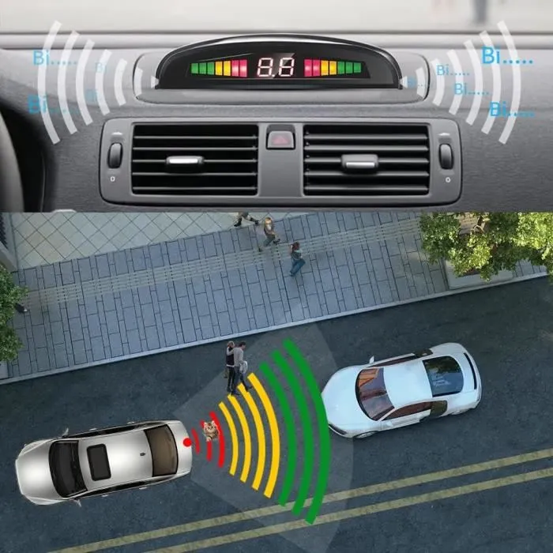

Or après de nombreuse recherche il apparaît qu'il n'y a pas de solution actuellement sur les véhicules pour répondre à cette situation!
Libre à nous alors d'être créatif et innovant!
L'idée est d'utiliser uniquement les technologies déjà mise en oeuvre sur les véhicules.
Après quelques recherches sur les capteurs et actionneurs présents sur les véhicules, nous nous somme orienté vers l'utilisation du système d'aide au stationnement et les lumières d'accueil pour apporter une réponse satisfaisante à notre projet.


Source:Amazon
Avec l'aide de Louison, notre étudiant tuteur, de nos professeurs et de représantants de la Direction Départementale des Territoires du Haut-Rhin, nous avons répondu à cette problématique en créant la mini-entreprise Urban Safe Mobility-USM
Et notre produit se nomme BDD system (Blind Danger Detector system).
Nous avons démarré par apprendre à simuler un simple radar de proximité avec un capteur à ultrasons et une carte Arduino.
Puis nous avons réfléchis à des scénarios pour répondre au problème.
Et après plusieurs scénarios et simulations nous avons enfin une solution satisfaisante!
 |
 |
 |
|
 |
 |
 |
 |
Nos différents scénarios et simulations: Source:USM
Nos premiers prototypes sont faits avec des cartes et capteurs compatibles Arduino.

Source:USM
Notre prototype finale va utiliser les vrais capteurs d'une voiture ... (en cours de réalisation)